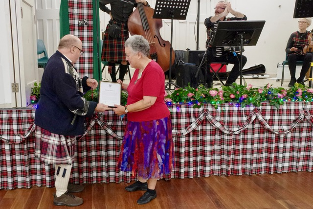

.jpeg)
Jo, as our President, thanks the band for their music (Photo by Joy)
There are lots more photos, and in the next few days, I will put them together so that Colin can post them on the Tawa Club website (tawascd.org.nz). Joy's photos are also available on Facebook.
Finally ...
Luckily we didn't have a fire alarm sending us outside this time - must be because Catherine put The Firehouse Reel on the programme! We did, however, have one interruption to proceedings. After five dances, people were asked to take a seat, as Rod Downey, as President of the Wellington Region, had an announcement to make.
I must admit I am embarrassed to have to say this, as I don't like blowing my own trumpet, but what Rod was announcing, was for me to come forward to be presented with a Region Award.
I was absolutely shellshocked. It was such a surprise. Apparently a number of people were in on the secret, but I never suspected anything. John, Joy and Loralee were at the ready to take photos of the presentation. For further details, you'll have to go to the Region website.
I want to thank the Region for giving me this award - I have enjoyed, and am still enjoying, the activities that are mentioned in the citation.

See you all on Thursday, for Catherine's final class before she heads off on a well-deserved holiday. Elizabeth Ferguson will teach us during her absence.
Cheers
Desiree